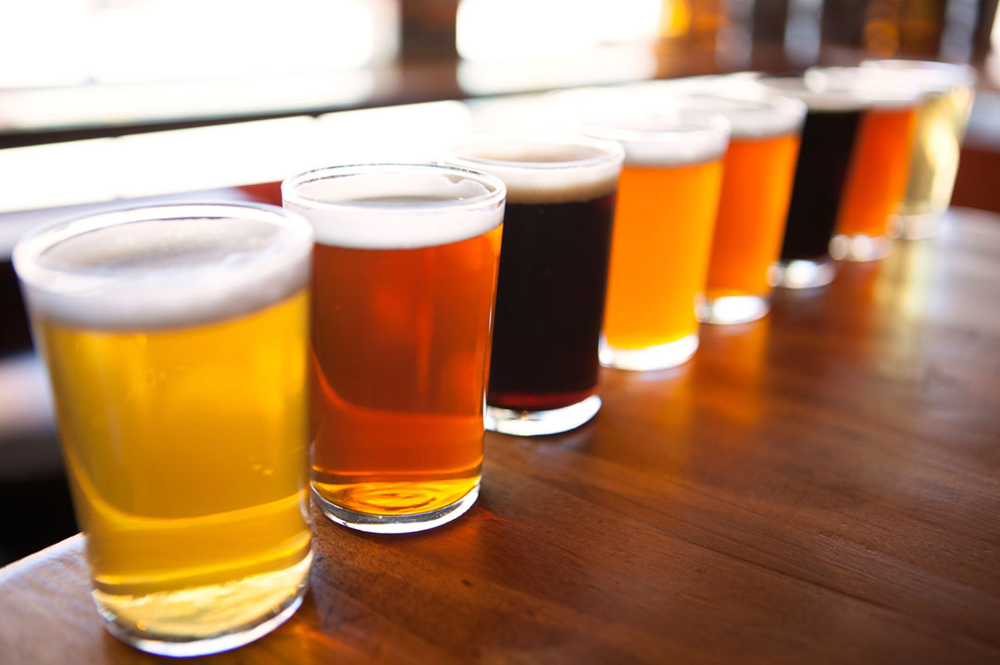

Welcome to my beer page!

My name is Justin, welcome!
I love making things! I love food! One of my favorite things is making beer!!
Making beer is really easy, all you have to do is follow simple directions! Can you make oatmeal? Can you boil water? If you answered yes to both of these questions, then you're already skilled enough to make your own beer!
Here are some simple instructions on how to make beer!
- Mash the grains in warm water to release the sugars
- Sparge, or rinse the grains with warm water into a large pot
- Boil your newly created wort with hops
- Cool it down and transfer it to a fermenting vessel
- Ferment for two weeks with yeast
- Bottle and enjoy!
|
And here are some recipes that I like!
If you want more resources on making beer, here is a great website that is clearly thorough and a great resource for myself! How To Brew by John Palmer